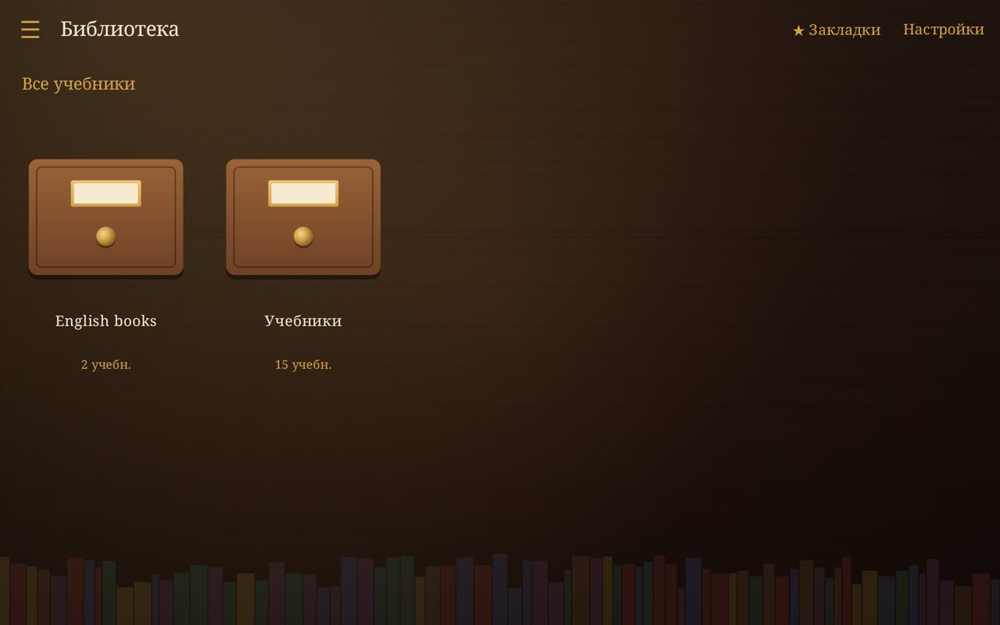
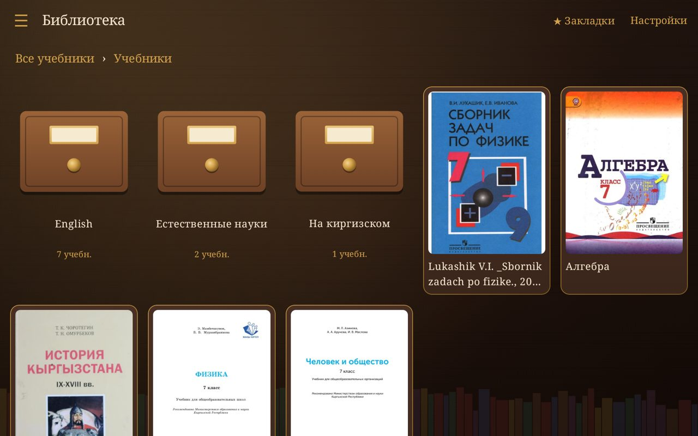
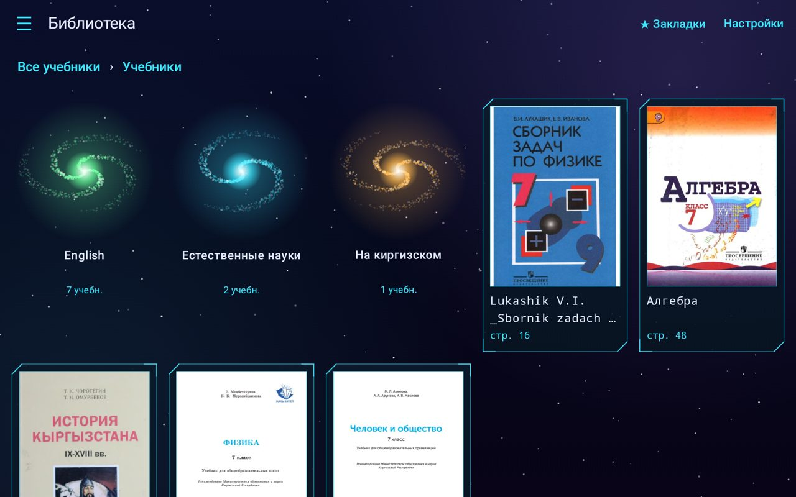
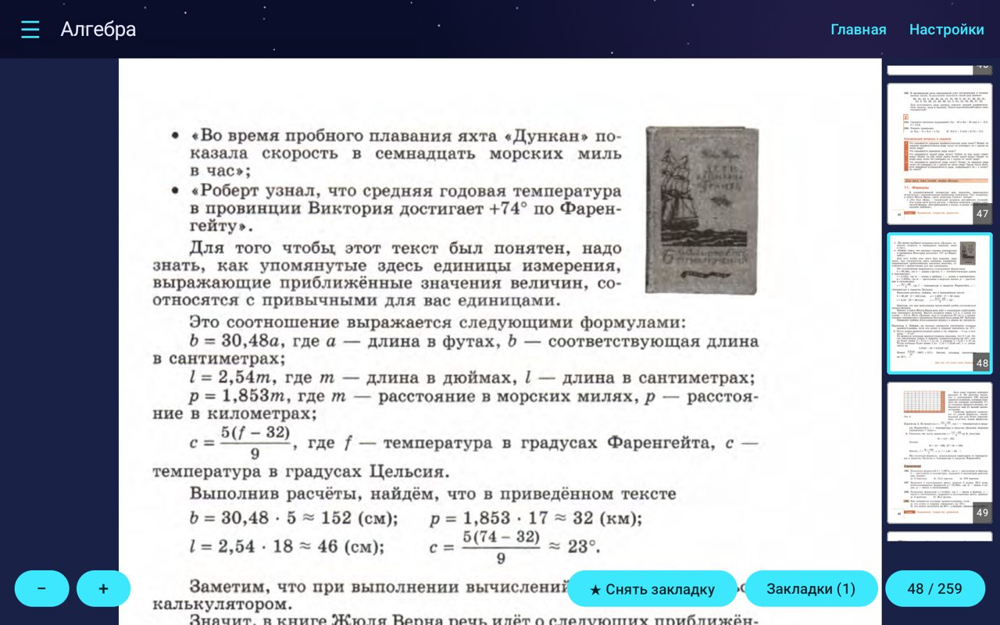

Уютная читалка школьных учебников в PDF для Android-планшета. Ваши папки остаются папками, закладки получают подписи, экран не гаснет.
A cosy reader for school textbooks in PDF on Android tablets. Your folders stay folders, bookmarks get labels, the screen stays on.
Скачать APKDownload APK Как установитьHow to installУкажите папку с учебниками один раз: структура сохраняется в меню и на главном экране.
Pick your textbooks folder once: its structure is kept in the menu and on the home screen.
Книги выглядят карточками с обложкой первой страницы, одинакового размера.
Books appear as equal-size cards with the first page as the cover.
Сколько угодно закладок в книге, у каждой своя подпись, плюс общий список по всей библиотеке.
Any number per book, each with its own label, plus a library-wide list.
Книга открывается там, где вы остановились. Масштаб помнится отдельно для каждой книги и для портрета и ландшафта.
A book opens where you stopped. Zoom is remembered per book, separately for portrait and landscape.
Если справа есть свободное место, там лента страниц: текущая в рамке, тап переключает. Отключается в настройках.
When there is spare room on the right, a strip of pages: current one framed, tap to switch. Can be turned off.
Во время чтения экран не выключается, а системные панели можно скрыть.
The display never sleeps while you read, and system bars can be hidden.




Схематичные иллюстрации тем.Schematic illustrations of the themes.
Скачать Читальню (APK, 9 МБ)Download Chitalnya (APK, 9 MB)
Читальни нет в Google Play, поэтому она ставится из файла. Это безопасно и занимает минуту.Chitalnya is not on Google Play, so it installs from a file. It is safe and takes a minute.
Актуальная версия: Latest version:
Chitalnya.apk кнопкой выше прямо на планшете.Chitalnya.apk with the button above, right on the tablet.Нужен Android 8.0 или новее. Приложение только читает ваши файлы и не использует интернет. Обновление ставится поверх старой версии: закладки и страницы сохраняются.Requires Android 8.0 or newer. The app only reads your files and does not use the internet. Updates install over the old version and keep your bookmarks and pages.
Пишите в Telegram: о проблемах, пожеланиях и предложениях. Читаю всё и отвечаю.
Message me on Telegram about problems, wishes and suggestions. I read everything and reply.
Написать в TelegramWrite on TelegramЛицензия PolyForm Noncommercial 1.0.0: использовать, изменять и делиться можно для некоммерческих целей. Коммерческое использование и продажа запрещены.
PolyForm Noncommercial 1.0.0 license: use, modify and share for non-commercial purposes. Commercial use and selling are not permitted.